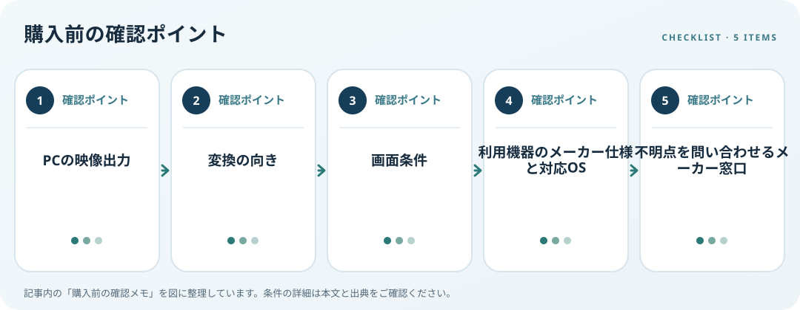

USB-CからDisplayPortへ映像を出すには、コネクターの形が合うだけでは不十分です。VESAは対応するUSB-C接続でDisplayPort Alternate Mode（Alt Mode）を扱う仕組みを説明しています。USB-Cは端子形状の名称なので、すべてのUSB-C端子が映像を出せるとは限りません。

対応条件を仕様で確認
PCメーカーの仕様書やポート説明で映像出力、Alt Mode、Thunderbolt等の記載を確認します。次にUSB-C出力のPCからDisplayPort入力の画面につなぐ向きを確かめます。双方向に見えるケーブルでも変換方向が固定される場合があるので、アダプターの入力・出力表示と対応機種を確認してください。
利用環境・設置条件を確認
PCの映像出力、アダプター／ケーブル、モニター入力の仕様を照合します。複数画面や高い解像度・リフレッシュレートが必要なら、PCのグラフィックス機能と外部画面の上限も確認します。端子数だけでは条件を判断できません。仕様が見つからなければ購入前にメーカーへ問い合わせます。
購入前の確認メモ
- PCの映像出力
- 変換の向き
- 画面条件
- 利用機器のメーカー仕様と対応OS
- 不明点を問い合わせるメーカー窓口
記事は出典の公開情報を確認手順に整理したもので、製品の使用・実測・ランキング・価格・在庫の調査は行っていません。購入時には各メーカーの最新情報をご確認ください。
出典
- VESA Brings DisplayPort to New USB Type-C Connector — VESA（確認日: 2026-10-10）
- Troubleshoot external monitor connections in Windows — Microsoft Support（確認日: 2026-10-10）